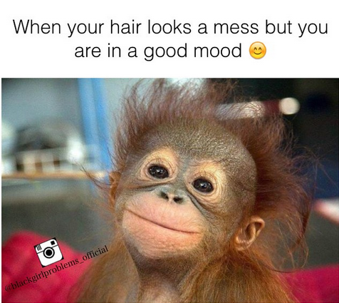
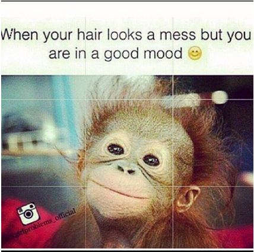

Week One
Skim Scroll Stare — Orit Gat
In this reading Gat says that “These artworks are often tagged and categorized by medium, and are rarely unique images, but rather, copies of copies of existing JPEGs whose origins are often hard to pinpoint.” This line is interesting to me because it reminded me of the effect that instagram has on images due to converting. This image would end up getting so warped that in the end it was as if an entirely new image had been created.
Here is an image that shows the situation I am talking about:


When I was looking for an image to reference for my first response I found an artists project that was about this exact scenario. Pete Ashton's Sitting In Stagram. Reading this project brief right after the Gat piece made me see an immediate connection. Gat ends “Skim Scroll Stare” by saying that “There is no way to undo the current proliferation of images. Nor should we want to: the contemporary state of hyper image literacy informs the work of artists, curators and critics just as much as it does the viewing of their work by the public. But maybe we can look to artists to challenge how we look at images – and art – today.” While Ashton isn't necessarily challenging how we look at images it does seem he may be challenging some of our viewing habits.